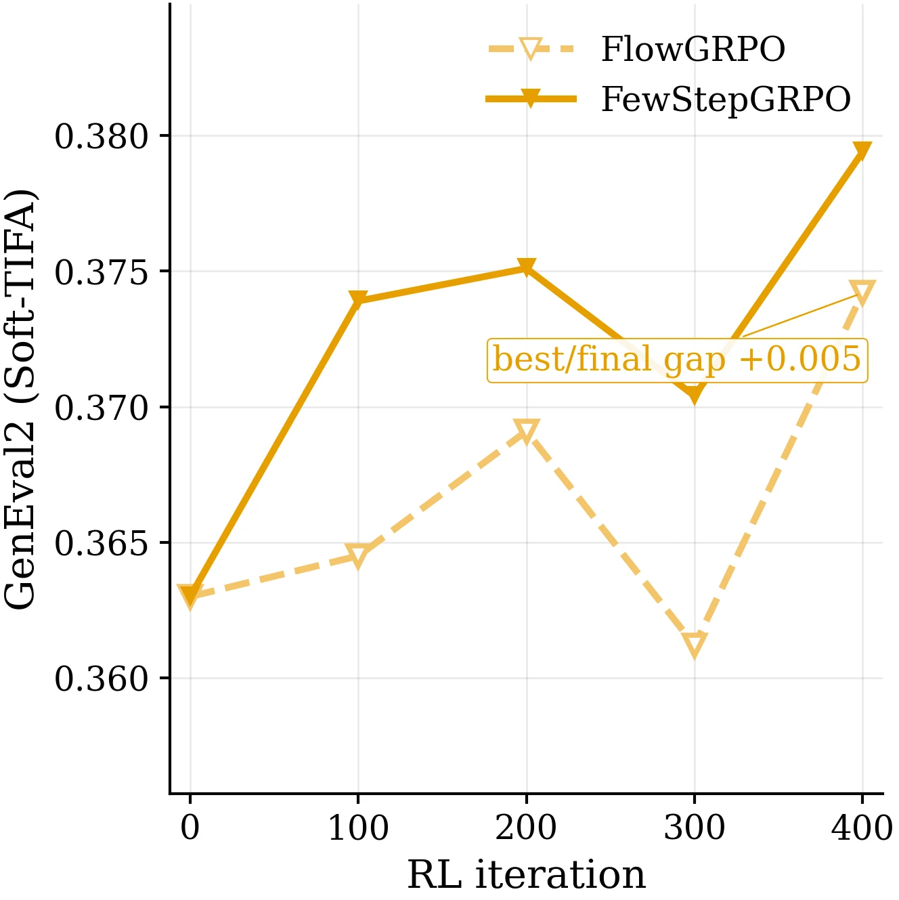
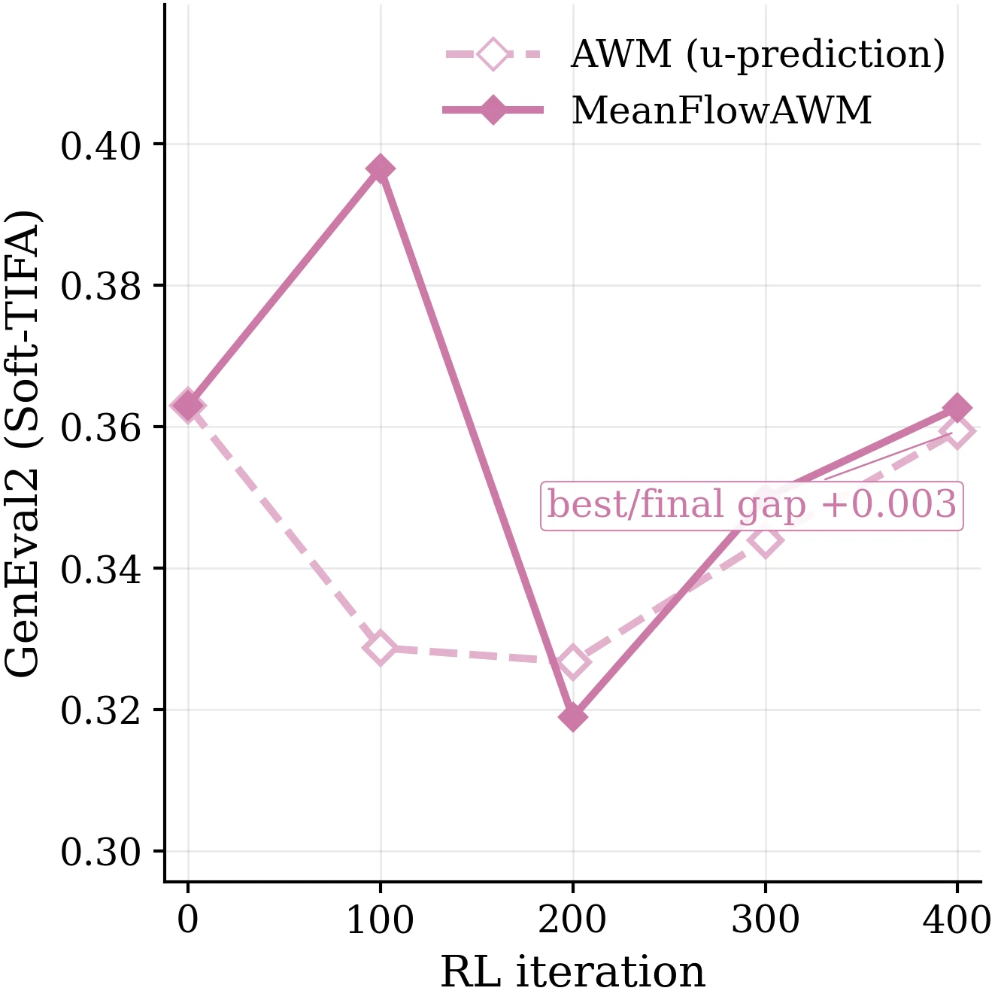
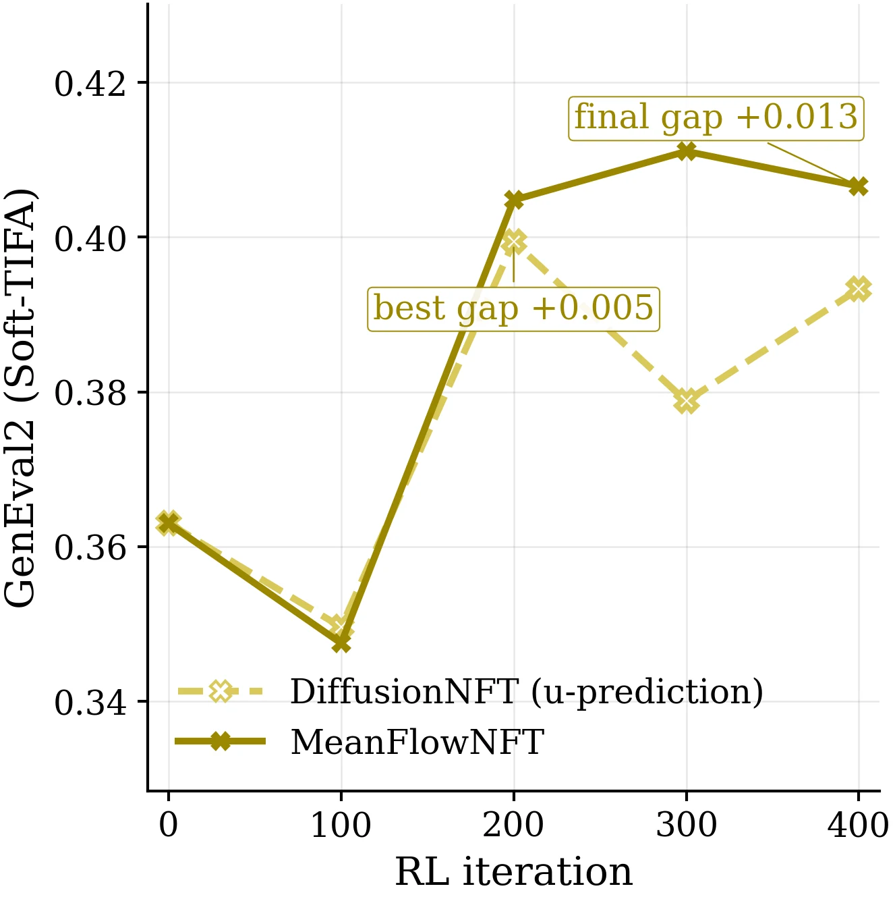
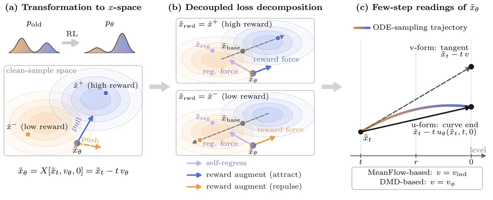
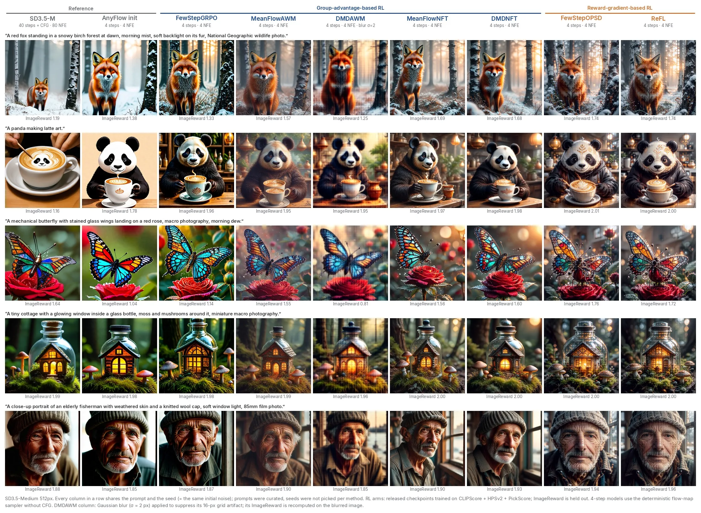
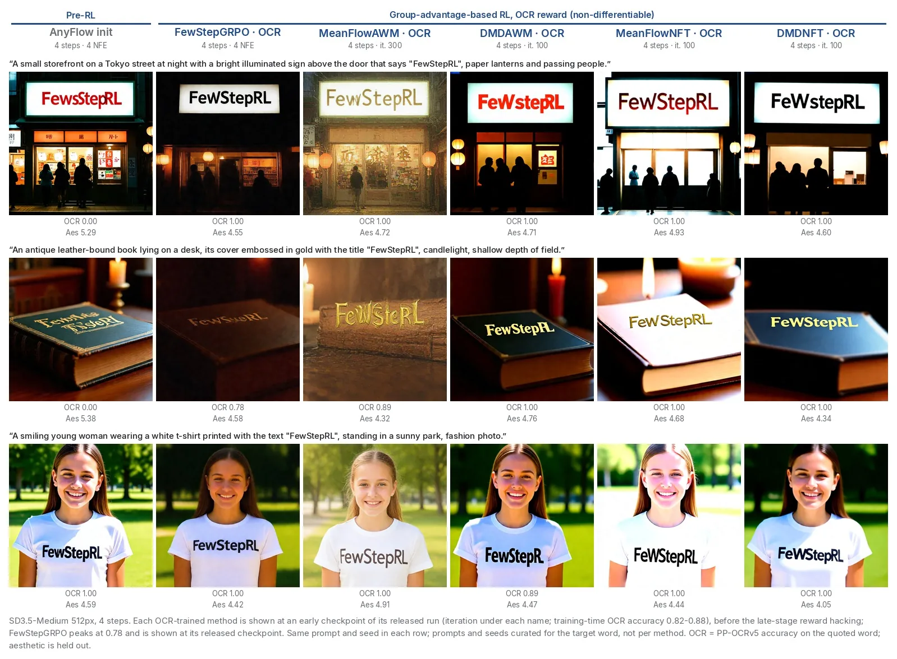

FewStepRL— Hunyuan
Fine-tuning Few-step Diffusion Models with Reinforcement Learning
1Tencent Hunyuan · 2Westlake University · 3University of Chinese Academy of Sciences
∗Equal contribution · †Project leader · ‡Corresponding author: wutailin@westlake.edu.cn
One framework that adapts FlowGRPO, AWM, DiffusionNFT, DiffusionOPSD and ReFL to 4‑step flow-map generators, compared under one codebase on SD3.5-Medium (images) and Wan2.1-T2V-1.3B (videos).
Every frame is sampled in 4 steps without CFG by a released FewStepRL checkpoint. Hover a strip to stop it and see the true colours; click a frame for its trainer, prompt and seed.
TL;DR
Reinforcement learning has become the standard post-training method for diffusion models, but every iteration has to roll out the current policy, and with a many-step sampler these rollouts dominate the cost of training. Few-step models cut this cost, yet they model an average velocity over an interval, whereas existing RL objectives are built for an instantaneous velocity with a many-step sampler.
FewStepRL adapts RL objectives to few-step models systematically in three phases. Each method then reduces to a choice of three anchors and three weights inside one shared loss, so all seven trainers run under identical rollout, reward and evaluation code.
ANIMATED WHITEBOARD
Three phases. Four practical findings.
English narration. Choose a chapter to watch it on its own, or play the full explanation through the final video gallery.
Loading chapters…
Explore the interactive diagrams
What RL does → instantaneous vs. average velocity → ① transformation → ② decomposition → ③ adaptation, with DiffusionNFT as the example (exact 1D flow, schematic 2D). Pause or jump between the markers to examine the formulas.
How each RL objective enters the three phases
GA group-advantage-based · RG reward-gradient-based. Click a method to open its page; the phase links open the blog chapter.
v-indv-indv-auxv-indv-auxv-indv-ind\(\varnothing\): no self-regression (\(W_{\mathrm{reg}}=0\)). Row ② is the decomposition of the original objective (§4.2, §5.3); row ③ the few-step anchors of Tab. 2.
What we found
Why few-step RL needs a framework
Watch this chapterRL rollouts dominate the cost of post-training. Few-step generators make rollouts cheap, but they predict an average velocity, while every RL objective we want to use was written for an instantaneous one.
The few-step generator
We write \(t\in[0,1]\) for the noise level (data at \(t=0\), noise at \(t=1\)). A few-step student \(u_\theta(x_t,t,r)\) is an average-velocity generator: the mean of the instantaneous velocity \(v_\theta\) along its probability-flow trajectory between levels \(r\) and \(t\). §3.1
A sampler with \(M_{\mathrm{step}}\) steps is a chain of such exact jumps, one subtraction each, instead of many first-order Euler steps. Our models are distilled with AnyFlow, which first trains with the MeanFlow identity and then applies on-policy distribution matching (DMD) against the frozen teacher. §6.1
\(J\) is the gap between the average and the instantaneous velocity, measured on the network itself and frozen before use (a directional-difference estimate in the code).
A second network \(v_\phi\) tracks the velocity of the student's own samples; \(v_{\mathrm{real}}-v_\phi\) gives the reverse-KL score difference.
What goes wrong with direct substitution
Applied directly, the RL objectives leave three questions open: which network evaluation should be differentiated, how the reference policy should be evaluated, and which parts of the interval \([r,t]\) are trained. Substituting the average velocity of the distilled model for the instantaneous velocity that FlowGRPO, AWM and DiffusionNFT require gives a lower best GenEval2 than the adapted objective in each of the three cases. Fig. 1



Paper Fig. 1: held-out GenEval2 against RL iteration (mixed reward), from the shared pre-RL few-step checkpoint. Dashed: original objective with the average velocity substituted. Solid: the few-step adaptation of this paper.
Three phases

Paper Fig. 2. (a) RL raises the relative mass of the high-reward mode; the objective is evaluated on the policy prediction \(\tilde x_\theta=X[\tilde x_t,v_\theta,0]\). (b) The gradient splits into a regression force toward \(\tilde x_{\mathrm{reg}}\) and a reward force along \(\tilde x_{\mathrm{rwd}}-\tilde x_{\mathrm{base}}\). (c) For a few-step model the prediction and anchors are computed at the end of the transport (u-form) or along its tangent (v-form).
Transformation
One common prediction in x-space makes density-, velocity- and reward-based objectives directly comparable.
Decomposition
A method is specified by a prediction, three anchors \((\tilde x_{\mathrm{reg}},\tilde x_{\mathrm{rwd}},\tilde x_{\mathrm{base}})\) and three weights \((W_{\mathrm{reg}},W_{\mathrm{rwd}},\omega)\).
Adaptation
Every anchor is computed from an average-velocity model, which yields few-step versions of all five objectives.
Transformation to x-space
Watch this chapterThe objectives we consider are written in transition-density, velocity or reward space. Under the linear noise schedule a velocity instead identifies a point in x-space at any chosen level \(r\), so every objective can be expressed through one common prediction. §4.1
A velocity MSE equals a scaled MSE between transported points. At the clean level \(r=0\) the factor is \(t^{-2}\). For \(\tilde x_t=(1-t)x+t\epsilon\) and the conditional velocity \(v_{\mathrm{cond}}=\epsilon-x\), the transport lands exactly on the sample, \(X[\tilde x_t,v_{\mathrm{cond}},0]=x\).
For the reward objectives, a detached rollout endpoint \(\hat x^{(i)}\) is re-noised to \(\tilde x_t^{(i)}\), and the policy provides the policy prediction \(\tilde x_\theta^{(i)}=X[\tilde x_t^{(i)},v_\theta,0]=\tilde x_t^{(i)}-t\,v_\theta\). The same map applied to the old policy gives the old policy's prediction \(\tilde x_{\mathrm{old}}^{(i)}=X[\tilde x_t^{(i)},v_{\mathrm{old}},0]\). Every loss then compares predictions at the same state, and only \(\tilde x_\theta\) is differentiated.
The renoised state \(\tilde x_t\) lies on the straight path from the sample \(\hat x\) to the noise \(\epsilon\). Transporting it with the conditional velocity \(v_{\mathrm{cond}}\) (green) returns to \(\hat x\) at \(r=0\); transporting it with the policy velocity \(v_\theta\) (blue) gives the policy prediction. Move \(t\) and \(r\): the two printed numbers stay equal, which is the identity above.
Two objectives in x-space
AWM Ex. AWM in x-space
The AWM target \(v_{\mathrm{cond}}^{(i)}\) maps to the rollout endpoint itself, so
$$\mathcal L_{\mathrm{AWM}}=\mathbb E\Big[A^{(i)}\,\frac{w(t)}{t^2}\,\big\|\tilde x_\theta^{(i)}-\hat x^{(i)}\big\|^2\Big],$$a squared residual between the prediction and the model's own sample, weighted by the signed advantage. \(w(t)=t^2\) cancels the prefactor; the few-step implementation does this up to a floor.
DiffusionNFT Ex. DiffusionNFT in x-space
The two implicit policies map to reflections about the old prediction, \(\tilde x^{\pm}_\theta=\tilde x_{\mathrm{old}}\pm\beta(\tilde x_\theta-\tilde x_{\mathrm{old}})\), so
$$\mathcal L_{\mathrm{NFT}}=\mathbb E\Big[\tfrac{1}{t^2}\big(\hat r\,\|\tilde x^{+}_\theta-\hat x\|^2+(1-\hat r)\,\|\tilde x^{-}_\theta-\hat x\|^2\big)\Big],$$two squared residuals to the model's sample, mixed by the bounded optimality weight \(\hat r=\tfrac12+\tfrac12\operatorname{clip}(A,-1,1)\).
The decoupled loss decomposition
Watch this chapterIn x-space, the gradient of every objective considered here is the transposed Jacobian of the prediction applied to the sum of two vectors: a reward-free self-regression and a reward augmentation. §4.2
Self-regression
Independent of the reward. It vanishes at \(\tilde x_\theta=\tilde x_{\mathrm{reg}}\) and pulls the prediction back toward an anchor the policy should stay close to, canonically the old policy's prediction. It limits how far the reward term can move the prediction and so protects against reward hacking.
Reward augmentation
For fixed anchors, a vector that contains the reward. Gradient descent moves \(\tilde x_\theta\) along \(+\omega(\tilde x_{\mathrm{rwd}}-\tilde x_{\mathrm{base}})\): the sign of \(\omega\) decides attraction or repulsion, \(\tilde x_{\mathrm{rwd}}\) is usually the rollout sample, and \(\tilde x_{\mathrm{base}}\) sets the reference point of the displacement.
Drag the prediction \(\tilde x_\theta\) (blue). Arrows show the two terms of the descent direction: the regression force \(-W_{\mathrm{reg}}(\tilde x_\theta-\tilde x_{\mathrm{reg}})\) (grey) and the reward force \(+W_{\mathrm{rwd}}\,\omega(\tilde x_{\mathrm{rwd}}-\tilde x_{\mathrm{base}})\) (blue for attraction, orange for repulsion), and their sum (dark).
Original methods as anchors and weights
The decomposition applies to the instantaneous-velocity originals, and also to the reward-free distillation losses (with \(\omega\equiv1\) and the teacher's prediction \(\tilde x_{\mathrm{real}}=X[\tilde x_t,v_{\mathrm{real}},0]\) as the rewarded anchor).
| objective | \(\tilde x_{\mathrm{reg}}\) | \(\tilde x_{\mathrm{base}}\) | \(\tilde x_{\mathrm{rwd}}\) | \(W_{\mathrm{reg}}\) | \(W_{\mathrm{rwd}}\) | \(\omega\) |
|---|---|---|---|---|---|---|
| AWM | — | \(\operatorname{sg}(\tilde x_\theta)\) | \(\hat x\) | 0 | \(w(t)/t^2\) | \(A\) |
| DiffusionNFT | \(\tilde x_{\mathrm{old}}\) | \(\tilde x_{\mathrm{old}}\) | \(\hat x\) | \(\beta^2/t^2\) | \(\beta^2/t^2\) | \(\operatorname{clip}(A,-1,1)/\beta\) |
| DiffusionOPSD | \(\tilde x_{\mathrm{old}}\) | \(\tilde x_{\mathrm{old}}\) | \(\tilde x_{+},\ \tilde x_{-}\) | \(\beta^2(a_++a_-)\) | \(\beta^2(a_++a_-)\) | \(\frac{a_+}{\beta(a_++a_-)},\ -\frac{a_-}{\beta(a_++a_-)}\) |
| ReFL (proxy) | — | \(\tilde x_{\mathrm{old}}\) | \(\tilde x_{+}\) (one ascent step) | 0 | detached \(>0\) | \(>0\) |
| MeanFlow (distill.) | — | \(\tilde x_{\mathrm{ind},r}\) | \(\tilde x_{\mathrm{real},r}\) | 0 | \(1/(t-r)^2\) | 1 |
| DMD (distill.) | — | \(\tilde x_{\mathrm{aux}}\) | \(\tilde x_{\mathrm{real}}\) | 0 | \((1-t)/(2t^2)\) | 1 |
From the worked examples of §4.2 (AWM, DiffusionNFT, MeanFlow, DMD) and §4.3 (DiffusionOPSD, ReFL). In DiffusionNFT both anchors coincide at the old prediction, so it regularises toward the point from which it measures the reward; its reward coefficient saturates at \(1/\beta\). AWM has no self-regression in its matching loss; its velocity-space proximal penalty plays that role.
An intuitive example
Take a group with \(A^{(1)}>A^{(2)}>0>A^{(3)}\). Members 1 and 2 are both attracted toward their rewarded samples; member 2 is not penalised for scoring below member 1, it only gets a smaller step. Member 3 scores below the group mean, so \(\omega^{(3)}<0\) and its prediction is repelled away from its sample. Attraction or repulsion is set by the baseline-subtracted advantage, not by the raw reward.
Adaptation to few-step models
Watch this chapterThe framework needs instantaneous velocities, but a few-step policy outputs an average velocity \(u_\theta(\tilde x_t,t,r)\). The rollout sample needs no reconstruction and the teacher stays instantaneous, so only \(\tilde x_\theta\) and the old-policy anchors must be rebuilt. §4.3
u-prediction (u-form)
$$\tilde x_{\theta,\mathrm u}=\tilde x_t-t\,u_\theta(\tilde x_t,t,0)$$Replace every instantaneous velocity by \(u_\theta(\cdot,t,0)\). The Jacobian is \(\partial\tilde x_{\theta,\mathrm u}/\partial\theta\): each update trains only the \(r=0\) edge of the flow map and leaves the entries \(r\neq0\), which the sampler uses, without a gradient.
v-prediction (v-form)
$$\tilde x_{\theta,\mathrm v}=\tilde x_t-t\big(u_\theta(\tilde x_t,t,r)+J[u_{\mathrm{old}},t,r]\big)$$Keep \(\tilde x_\theta=X[\tilde x_t,v,0]\) and recover \(v\) from the network. \(J\) is detached, so it shifts the prediction without changing its Jacobian; \(r\) is resampled every update, so every \(u_\theta(\cdot,t,r)\) receives a gradient.
v-ind · self-induced velocity (MeanFlow)No second network; costs a Jacobian-vector product, estimated with two extra no-grad forwards of \(u_{\mathrm{old}}\) per query. Tab. 4
v-aux · auxiliary velocity (DMD)Fitted online to the old-policy rollouts (\(n_{\mathrm{fm}}=5\) flow-matching steps per outer iteration); used only as an anchor, never as the prediction, otherwise \(\partial\tilde x_\theta/\partial\theta=0\).
The three few-step forms
| u-form | v-form, shared-J (v-ind) | v-form, auxiliary (v-aux) | |
|---|---|---|---|
| \(\tilde x_\theta\) | \(X[\tilde x_t,u_\theta(\tilde x_t,t,0),0]\) | \(X[\tilde x_t,u_\theta(\tilde x_t,t,r)+J,0]\) | \(X[\tilde x_t,u_\theta(\tilde x_t,t,r),0]\) |
| \(\tilde x_{\mathrm{reg}}\) | \(X[\tilde x_t,u_{\mathrm{old}}(\tilde x_t,t,0),0]\) | \(X[\tilde x_t,v_{\mathrm{ind}},0]\) | \(X[\tilde x_t,u_{\mathrm{old}}(\tilde x_t,t,r),0]\) |
| \(\tilde x_{\mathrm{base}}\) | \(X[\tilde x_t,u_{\mathrm{old}}(\tilde x_t,t,0),0]\) | \(X[\tilde x_t,v_{\mathrm{ind}},0]\) | \(X[\tilde x_t,v_\phi,0]\) |
| \(\tilde x_{\mathrm{rwd}}\) (rollout) | \(\hat x\) | \(\hat x\) | \(\hat x\) |
| trained \((t,r)\) | \((t,0)\) | \((t,r)\), \(0\le r\le t\) | \((t,r)\); \(v_\phi\) queried at \((\tilde x_t,t)\) only |
Paper Tab. 1, with \(J=J[u_{\mathrm{old}},t,r]\) and \(v_{\mathrm{ind}}=u_{\mathrm{old}}+J\). A few-step method does not introduce a new loss: it specifies how the four points are computed and which entries \(u_\theta(\cdot,t,r)\) receive a gradient.
One training step for every trainer
All trainers are subclasses of one base trainer whose step runs one outer iteration: rollout → reward and advantage → (auxiliary fit) → \(n_{\mathrm{it}}\) queries of anchors, weights and loss → one optimiser step → refresh of the old policy (EMA). §5.1, Code 1
class FewStepRLTrainer: estimator = VInd() # Stage 3(ii)-(iii): v-ind or v-aux n_it = n_ts # default; FewStepGRPO uses M_step, FewStepOPSD uses 1 def step(self, prompts): # ONE outer iteration batch = self.rollout(prompts) # Stage 1, detached R = reward(decode(batch.x_hat), batch.c) # Stage 2 batch.A, batch.r_hat = self.advantage(R, batch.c) self.estimator.fit(batch) # v-aux only for q in self.queries(batch): # Stage 3(i): n_it queries p = self.anchors(q) # Stage 3(ii)-(iii): x_θ, x_reg, x_base, x_rwd W_reg, W_rwd, omega = self.weights(q, p) # Stage 3(iv) loss = self.loss(p, W_reg, W_rwd, omega) # Stage 4: the two squares accumulate(mean_batch(loss + lam_kl * self.kl(q)) / self.n_it) self.update() # one step on θ self.refresh_old() # u_old ← EMA of u_θ
Abridged from the paper's Code 1. Each method overrides only the components in which it differs; see the components table.
Seven trainers, one training step
Watch this chapterEach original objective becomes a few-step trainer by choosing its anchors, weights and instantaneous-velocity estimator. Five trainers are group-advantage-based (the reward enters only through scalar advantages of a prompt group); two are reward-gradient-based (the update direction comes from \(\nabla R\)). Tab. 5
Family map
The v-aux variant of FewStepGRPO is not used because \(v_\phi\) is fitted on endpoint-renoised states rather than replayed sampler states.
Components of each trainer Tab. 2
Click a trainer to open its page; hover to highlight its column.
\(\tilde x_{\mathrm{ind}}|_{J=0}=X[\tilde x_t,u_{\mathrm{old}}(\tilde x_t,t,r),0]\), used with the J-free \((t,r)\) query. \(a_+=\hat r/\gamma_+\), \(a_-=(1-\hat r)/\gamma_-\) with adaptive normalisers \(\gamma_\pm\); \(c_{\mathrm{adv}}\) undoes the compression of the advantage in \(\hat r\). In FewStepOPSD and ReFL the sign of \(\omega\) is fixed by construction, not by \(A\).
Network evaluations per inner iteration Tab. 4
| trainer | \(n_{\mathrm{it}}\) | \(c_\theta\) | \(c_{\mathrm{old}}\) | \(c_J\) | \(c_\phi\) | \(c_{\mathrm{ref}}\) | \(c_{\mathrm{extra}}\) per outer iteration |
|---|---|---|---|---|---|---|---|
| FewStepGRPO | \(M_{\mathrm{step}}\) | 1 | 1 | 2 | — | 1 | — |
| MeanFlowAWM | \(n_{\mathrm{ts}}\) | 1 | 1 | 2 | — | 1 | — |
| DMDAWM | \(n_{\mathrm{ts}}\) | 1 | 1 | 0 | 1 | 1 | \(n_{\mathrm{fm}}\) forwards and backwards of \(v_\phi\) |
| MeanFlowNFT | \(n_{\mathrm{ts}}\) | 1 | 1 | 2 | — | 1 | — |
| DMDNFT | \(n_{\mathrm{ts}}\) | 1 | 1 | 0 | 1 | 1 | \(n_{\mathrm{fm}}\) forwards and backwards of \(v_\phi\) |
| FewStepOPSD | 1 | 1 | 1 | 0† | — | 1 | \(2M_{\mathrm{tgt}}\) reward backwards |
| ReFL | 1 | 1 | 1 | 0† | — | 1 | 1 reward backward |
† J dropped because it cancels, which leaves the loss and its gradient unchanged (App. C). Cost of one outer iteration: \(C=C_{\mathrm{rollout}}+c_{\mathrm{extra}}+n_{\mathrm{it}}(c_\theta+c_{\mathrm{old}}+c_J+c_\phi+c_{\mathrm{ref}})\).
Images: a differentiable mixed reward
SD3.5-Medium distilled with AnyFlow, fine-tuned on CLIPScore + HPSv2 + PickScore. The reward is differentiable, so all seven trainers apply. §6.1, §6.3
Results at iteration 400 Tab. 6(b)
Click a column to sort. Bold as in the paper: best among the trained methods per comparable column. "h": wall-clock hours to iteration 400 on 8 GPUs; GenEval2 best with its iteration; GenEval2 has a resolution of about 0.03.
Learning curves Fig. 4
Online evaluation every 50 iterations (training reward, HPSv2, PickScore, CLIPScore, aesthetic, OCR on DrawBench / OCR prompts); offline evaluation at saved checkpoints every 100 iterations (HPSv3, ImageReward on 256 images, seed 12345; GenEval2 on its own prompts). Iteration 0 is the shared AnyFlow init. Data: the training-log table the paper figure is plotted from.
What the numbers say §6.3
- Adaptation is necessary. FewStepGRPO raises the training reward from 1.450 to 1.461 and HPSv3 from 10.30 to 11.58, whereas FlowGRPO with the average velocity substituted leaves the reward at 1.438 and lowers HPSv3 to 9.62. MeanFlowNFT reaches 1.509 against 1.440 for DiffusionNFT, and is higher on HPSv3 (13.23 vs. 11.79), ImageReward (1.385 vs. 1.317) and best GenEval2 (0.411 vs. 0.399, within resolution).
- Reward gradient wins where it exists. FewStepOPSD and ReFL raise the training reward to 1.64 and 1.62 against 1.46–1.52 for the five group-advantage methods, and also lead on ImageReward and GenEval2. DMDNFT and MeanFlowNFT come next (1.51–1.52, GenEval2 0.41 at iteration 400).
- CLIPScore moves only with \(\nabla R\). None of the five group-advantage runs increases CLIPScore (0.289 → 0.279–0.285), whereas FewStepOPSD and ReFL raise it to 0.317–0.322.
Cost of one iteration Tab. 7
Medians over the timers in the training logs, 8 H20 GPUs. The reward-gradient methods are cheapest per iteration (one query of \(u_\theta\) instead of four, and \(J\) cancels), but their sampling includes back-propagation through the reward model and the VAE decoder (175–225 s vs. ~78 s). The shared-\(J\) v-form (FewStepGRPO, MeanFlowAWM, MeanFlowNFT) pays two extra forwards of \(u_{\mathrm{old}}\) per query: 423–435 s vs. 304–326 s for DMDAWM and DMDNFT.
Same prompt, same noise, nine models

Released checkpoints, 512², shared prompt and seed per row (prompts curated, seeds not picked per method); held-out ImageReward under each image. DMDAWM samples carry a faint 16-px latent-patch lattice; its column is shown after a Gaussian blur (σ = 2 px) and its ImageReward is recomputed on the blurred images. SD3.5-M uses its default 40 steps + CFG for reference.
Images: a non-differentiable OCR reward
The reward is the OCR accuracy of the text rendered in the image. It has no gradient with respect to the clean sample, so FewStepOPSD and ReFL do not apply and the five group-advantage trainers compete. §6.1, §6.3
OCR accuracy within 200 iterations Tab. 6(a)
Left: s/iter, OCR accuracy (online) at four iterations, and the first evaluated iteration with OCR ≥ 0.85 with the wall-clock hours to reach it. Right: OCR and held-out evaluators at the first saved checkpoint whose OCR accuracy exceeds 0.82; FewStepGRPO and MeanFlowAWM do not cross it within 200 iterations. Bold as in the paper; at iteration 200 MeanFlowNFT and DMDAWM are indistinguishable at the curve's resolution (about ±0.01) and both are bold.
Learning curves Fig. 3
Online every 50 iterations on the OCR prompts; HPSv3, ImageReward offline at checkpoints every 100; GenEval2 on its own prompts. Curves show the logged values the paper's figure is plotted from; several entries of Tab. 6(a) are read from this curve and agree to about ±0.01.
Fast reward gains come with held-out degradation
DMDAWM, MeanFlowNFT and DMDNFT raise OCR accuracy from 0.498 to above 0.85 within 100–150 iterations; MeanFlowAWM and FewStepGRPO reach 0.802 and 0.776 at iteration 200. MeanFlowNFT reaches the highest OCR within the horizon (about 0.945 at iteration 150). DMDAWM rises steeply after iteration 50 — it has no self-regression and its baseline \(\tilde x_{\mathrm{aux}}\) follows the policy — and this coincides with the largest held-out degradation: HPSv3 12.86 → 5.05 and ImageReward 1.233 → 0.092 at its first checkpoint above OCR 0.82. §6.3
Before / after: rendering “FewStepRL”
Drag across the image. Each trainer is shown at an early checkpoint of its released run with training-time OCR accuracy 0.82–0.88 (FewStepGRPO, which peaks at 0.78, at its released checkpoint), before the late-stage reward hacking. OCR = PP-OCRv5 accuracy on the quoted word for this image. Same prompt and seed for all.

Video: Wan2.1-T2V-1.3B
The same seven trainers on a 4-step AnyFlow-distilled Wan2.1-T2V-1.3B at 480×832 and 81 frames. Only part of the video reward is differentiable, which limits the reward-gradient methods. §6.2, §6.4
Results at iteration 250 Tab. 8
GPU-h = GPUs × s/iter × 250 / 3600 is the comparable cost; s/iter is compared only among the 32-GPU rows. The four reward components are raw scorer outputs; the sum uses the logged z-scores for MQ and TA. Bold as in the paper.
Same prompt, same noise: eight models in sync
AnyFlow init and seven trainers, same prompt and seed, 4 steps, no CFG; one master clock keeps all eight players on the same frame. Every trainer starts from the same policy and reward. The dolphin clip was picked from 436 clips for a large difference across trainers: the median over the seven trainers of the mean pixel difference to the AnyFlow clip is 17.3 (0–255 scale), against 7.2 for the median clip; on typical prompts the clips differ mostly in detail. DMDNFT moves furthest from the initialization, MeanFlowAWM and ReFL stay closest.
Held-out VBench, dimension by dimension Tab. S2
Normalised VBench dimensions at iteration 250
Each row is one dimension; each dot one trainer. Only dynamic degree (spread 6.29) and multiple objects (2.95) separate the methods by more than 2.6 points; VBench overall spans only 0.32 points (83.38–83.70).
What the numbers say §6.4
- FewStepGRPO is the least effective: the only group-advantage method that ends below the shared initialisation (15.89 vs. 16.54), with TA dropping from 1.85 to 1.23.
- DMDNFT is the most effective on the training reward (17.93, +1.39, leading three of four terms), and its gain coincides with larger held-out degradation: VBench overall 83.38 (last of seven) and dynamic degree 53.33 (lowest), against 83.70 and 58.89 for MeanFlowAWM, the best on VBench.
- FewStepOPSD and ReFL gain the least reward after FewStepGRPO (16.26, 16.46): the video reward gradient needs several numerical simplifications (HPSv3-only gradient, fp32 reward model, 21 of 81 frames decoded one latent frame at a time). TA rises above the initialisation (1.91, 1.89); ReFL is second on VBench overall (83.69).
- The cost ordering flips. On video the DMD-based methods are slower than their MeanFlow counterparts (821 vs. 734–737 s/iter): fitting \(v_\phi\) costs about 144 s per iteration, more than the ~60 s saved on \(J\). The reward-gradient methods are the two most expensive in GPU-hours.
4 steps vs. 50 steps (illustration)
Left: original Wan2.1-T2V-1.3B with 50 steps and CFG 5.0 (100 network evaluations); right: MeanFlowAWM, MeanFlowNFT and DMDNFT with 4 steps, ordered by mean pixel difference to the AnyFlow clip over 240 clips (3.4, 11.6, 24.7). Clips selected for a large difference of MeanFlowNFT and DMDNFT from AnyFlow; on average it is smaller. The paper does not evaluate the 50-step model.
Does a 4-step model improve with more steps?
Watch this chapterEach fine-tuned checkpoint is sampled at \(M_{\mathrm{step}}\in\{4,8,16,32\}\) on the same shifted grid, 256 DrawBench prompts, seed 12345, no retraining. References: the AnyFlow init and SD3.5-Medium with CFG 4.5. §6.5
Absolute value against the number of sampling steps Fig. 7
Dashed: AnyFlow init. Dotted: SD3.5-Medium (instantaneous velocity, Euler + CFG, two evaluations per step). For the fine-tuned models GenEval2 changes stay within its ~0.03 resolution; the AnyFlow init drops beyond it (0.363 → 0.320).
Four conclusions §6.5
- Different training stages scale differently. SD3.5-Medium rises sharply from 4 to 8 steps (HPSv3 −4.49 → 9.96 by 32 steps) yet even at 32 steps (64 evaluations) stays below every fine-tuned 4-step model on HPSv3, ImageReward, aesthetic, HPSv2 and PickScore. The AnyFlow init degrades with more steps (ImageReward 1.11 → 1.02, GenEval2 0.363 → 0.320).
- No systematic gain on the training reward. From 4 to 32 steps HPSv3 changes by +1.0% to −6.8% for six of seven trainers, against −17% for the AnyFlow init, which suggests that the decline is inherited from the initialisation rather than introduced by RL.
- OCR-sensitive prompts expose a sharper failure. Selected DMDNFT and MeanFlowNFT samples collapse at 32 steps to little more than foreground text (HPSv3 12.18 → 0.32 and 11.36 → 0.32) while CLIPScore rises.
- Visible sample-level scaling exists. Many samples look cleaner with 2–4× the training step count, although the aggregate rewards barely change.
Paper Tab. S3: HPSv3 at each step count and the % change of every dimension from 4 to 32 steps. "it.": the checkpoint used.
Which trainer should I use?
Watch this chapterGuidance distilled from the experiments, each from a single run. Answer two questions to get the paper's recommendation. §6.6
Open problems §7
- DMD-based variants need extra forward and backward passes and memory for \(v_\phi\); how to reduce this overhead is open.
- Reward-gradient methods need a differentiable reward and a gradient that fits in memory; on video, MQ and TA give no gradient and per-frame decoding makes the gradient deviate from a joint decode.
- With a scalar group advantage, whether every reward summand takes effect depends on summand weighting, the global-batch standard deviation and small within-group spreads.
- A model fine-tuned at one step count does not improve systematically with more steps; how to obtain test-time scaling cheaply remains open.
4 steps, no CFG
Watch this chapterImages (SD3.5-Medium, 512²) and videos (Wan2.1-T2V-1.3B, 81 frames) from the released FewStepRL checkpoints. Hover a strip to stop it and reveal the true colours; click a frame for its trainer, prompt and seed.
Prompts were curated; per prompt the seed was chosen among 8 with the paper's reward models and visual inspection. Image frames come from the four trainers whose samples are free of the faint 16-px latent-patch lattice (DMDNFT, MeanFlowNFT, MeanFlowAWM, FewStepGRPO); video frames cover all seven trainers. The text in the last strip — “FewStepRL” and “Hunyuan” — is rendered by the models themselves.
Code, checkpoints and citation
fewsteprl-sd35
Image code: SD3.5-Medium + AnyFlow Stage-1/2 LoRAs; one Stage-3 LoRA per experiment; mixed and OCR rewards; GenEval2 / HPSv3 / ImageReward evaluation.
bash scripts/train/meanflownft_mix.sh 8 python inference.py scripts/eval/configs/sample_sd35m_fewstep.yaml \ --prompt "..." --override num_stages=3 \ stage3_lora_path=checkpoints/meanflownft_mix/checkpoint-400/generator_ema.ptGitHub repository 🤗 Checkpoints
fewsteprl-wan21
Video code: AnyFlow-Wan2.1-T2V-1.3B; HPSv3 + VideoAlign rewards; VBench evaluation; seven released checkpoints at iteration 250.
python inference.py scripts/eval/configs/sample_wan.yaml \ --prompt "..." --override mode=meanflow_nft \ meanflow_nft_path=checkpoints/dmdnft/checkpoint-250/generator_ema.ptGitHub repository 🤗 Checkpoints
Released checkpoints
| trainer | image · fewsteprl-sd35 (SD3.5-Medium) | video · fewsteprl-wan21 | |
|---|---|---|---|
| mixed reward | OCR reward | HPSv3 + VideoAlign | |
| FewStepGRPO | fewstepgrpo_mix · 300 | fewstepgrpo_ocr · 200 | fewstepgrpo · 250 |
| MeanFlowAWM | meanflowawm_mix · 400 | meanflowawm_ocr · 400 | meanflowawm · 250 |
| DMDAWM | dmdawm_mix · 400 | dmdawm_ocr · 400 | dmdawm · 250 |
| MeanFlowNFT | meanflownft_mix · 400 | meanflownft_ocr · 200 | meanflownft · 250 |
| DMDNFT | dmdnft_mix · 400 | dmdnft_ocr · 200 | dmdnft · 250 |
| FewStepOPSD | meanflowopsd_mix · 400 | — (no gradient) | meanflowopsd · 250 |
| ReFL | reflmx_mix · 400 | — (no gradient) | reflmx · 250 |
| original objectives (Fig. 1 baselines) | flowgrpo_mix, awm_mix, nft_mix · 400 | — | — |
Each entry is checkpoints/<trial>/checkpoint-<step>/generator_ema.pt (EMA Stage-3 LoRA; SHA-256 in checkpoints/SHA256SUMS) in the Hugging Face repository of the column: Delcher/fewsteprl-sd35 (images) or Delcher/fewsteprl-wan21 (videos). Image LoRAs (≈ 43 MB) apply on top of SD3.5-Medium + the AnyFlow Stage-1/2 LoRAs; the DMD auxiliary velocity networks are in checkpoints/aux_vel. Video LoRAs (≈ 93 MB) apply on top of AnyFlow-Wan2.1-T2V-1.3B (non-commercial licence) and are all at iteration 250, the iteration of Tab. 8. The paper's image tables report fixed iterations (400 for mixed reward, ≤ 200 for OCR). Every sample on this page comes from these checkpoints.
BibTeX
@article{lin2026fewsteprl,
title = {FewStepRL: Fine-tuning Few-step Diffusion Models with Reinforcement Learning},
author = {Lin, Haitao and Ren, Minsi and Li, Yang and Ge, Xingtong and
Hu, Zheyuan and Hu, Peiyan and Wu, Tailin},
journal = {arXiv preprint arXiv:2611.08240},
year = {2026}
}
Acknowledgements
Built on AnyFlow, MeanFlow, DiffusionNFT, VideoAlign, HPSv3, VBench, diffusers and peft. AnyFlow-Wan and the reward models are under their own licenses.